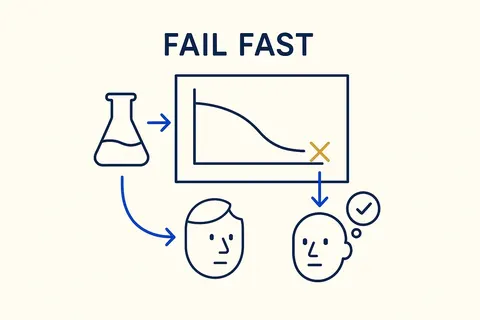
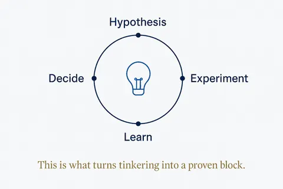
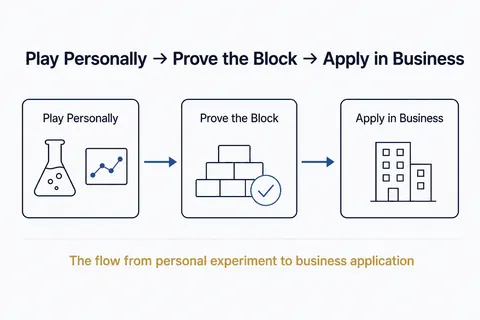
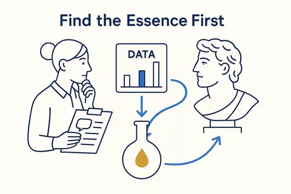
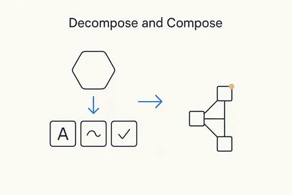

Design thinking and small experiments
Start with the real need, try the smallest thing that could work, read the result honestly, and only then build more. 7 concepts; each opens its full page in its own library.

 Design ThinkingApproach modeling as design: understand the real need, explore options, and experiment fast — and with AI you can now try new methods, build applications and test them at a speed that was impossible before.Breakthrough Modeling →
Design ThinkingApproach modeling as design: understand the real need, explore options, and experiment fast — and with AI you can now try new methods, build applications and test them at a speed that was impossible before.Breakthrough Modeling →
Fail FastSet experiments up to fail quickly and cheaply, read the signal honestly, and move on — don't linger in something that, in the end, may not work.Breakthrough Modeling →
The Experiment LoopPlay with a hypothesis: hypothesize → experiment → learn → decide. The mechanism that turns tinkering into a proven block.Structure Beats Magic → Play with the BlocksLike Lego — snap, try, rebuild. Tinker in your own life to learn what's possible.Structure Beats Magic →
Play with the BlocksLike Lego — snap, try, rebuild. Tinker in your own life to learn what's possible.Structure Beats Magic →
Play Personally → Prove the Block → Apply in BusinessThe flow from personal experiment to business application.Structure Beats Magic →
Find the Essence FirstDistil the essence before the detail — in interviews, grasp the data and the bigger picture first, then drill down; and quickly identify what actually works in the giants who came before us.Breakthrough Modeling →
Decompose and ComposeBreak the complex whole into small, self-contained parts you can name, model and check one at a time — the core move of thinking in structures.Breakthrough Modeling →Everything on this topic → (use cases, articles, resources)
Other categories: From proof of concept to something you rely on · Vibe coding practices that hold · Data, rules and structure first · Build, buy or rent · Privacy and control · Building your own data models · Components and building blocks · The business OS